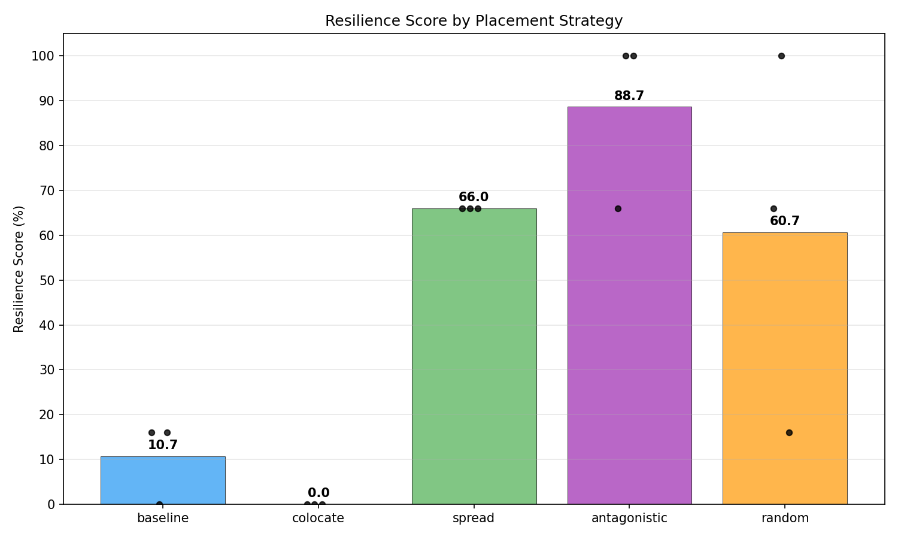
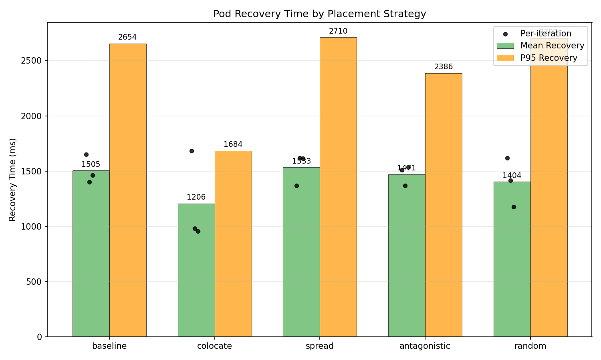
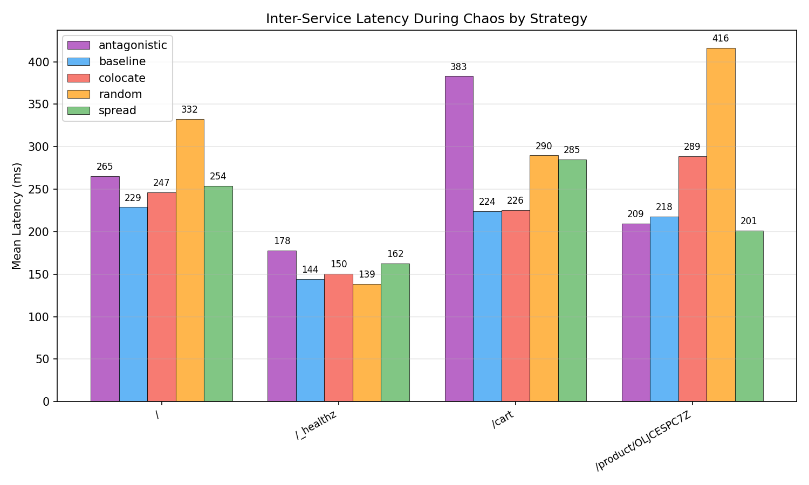
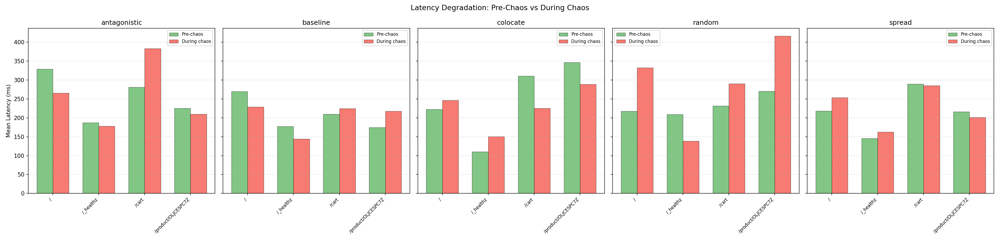
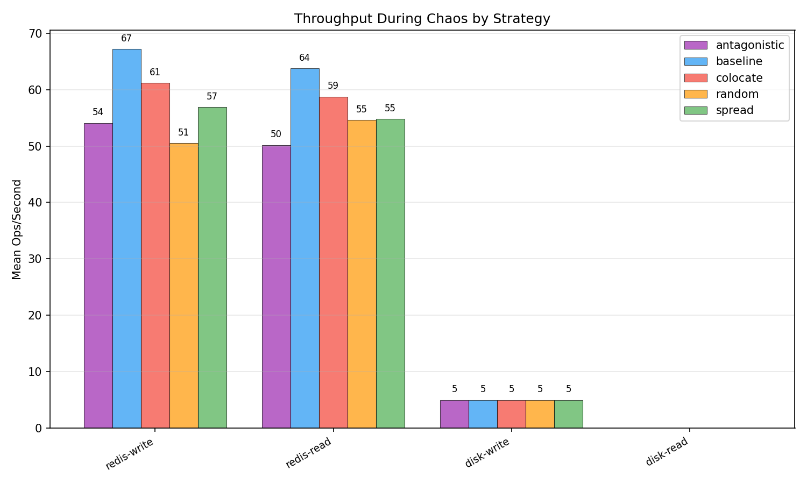
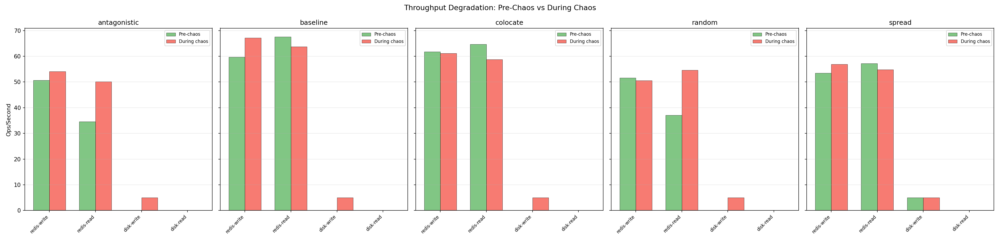
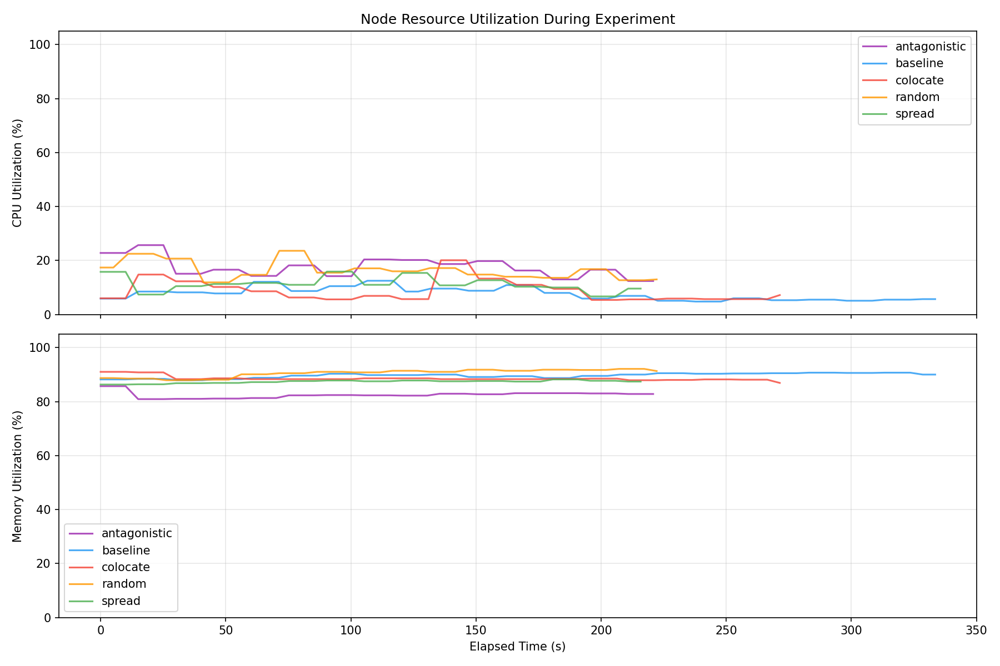
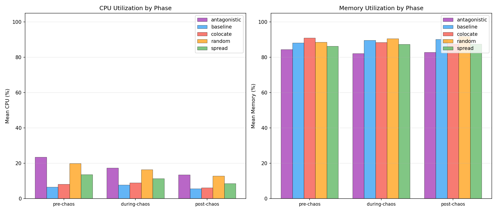
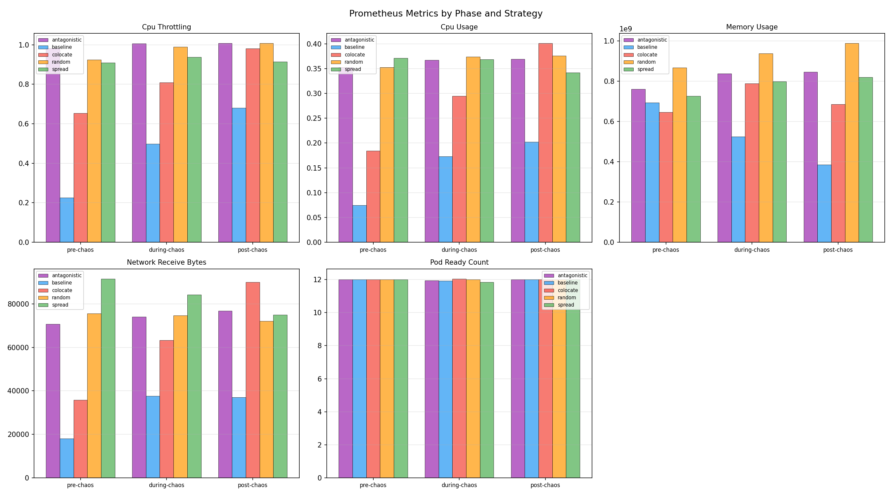

| Strategy | Runs | Avg Resilience Score | Pass Rate | Mean Recovery (ms) | Median Recovery (ms) | P95 Recovery (ms) |
|---|---|---|---|---|---|---|
| antagonistic | 3 | 88.7 | 67% | 1471.4 | 1509.6 | 2386.0 |
| baseline | 3 | 10.7 | 0% | 1504.8 | 1463.1 | 2654.0 |
| colocate | 3 | 0.0 | 0% | 1206.3 | 980.0 | 1684.0 |
| random | 3 | 60.7 | 33% | 1403.5 | 1414.8 | 2702.0 |
| spread | 3 | 66.0 | 0% | 1533.3 | 1614.2 | 2710.0 |
| Strategy | Route | Pre-Chaos Mean (ms) | During Chaos Mean (ms) | During Chaos P95 (ms) | Post-Chaos Mean (ms) | Errors During Chaos |
|---|---|---|---|---|---|---|
| antagonistic | / | 328.6 | 265.2 | 417.2 | 200.3 | 2 |
| antagonistic | /_healthz | 187.1 | 177.9 | 395.6 | 178.0 | 0 |
| antagonistic | /cart | 280.9 | 383.0 | 482.1 | 274.8 | 0 |
| antagonistic | /product/OLJCESPC7Z | 225.4 | 209.4 | 344.2 | 147.1 | 1 |
| baseline | / | 270.0 | 228.8 | 398.7 | n/a | 27 |
| baseline | /_healthz | 177.4 | 144.1 | 300.1 | 192.0 | 0 |
| baseline | /cart | 209.4 | 224.3 | 388.2 | n/a | 20 |
| baseline | /product/OLJCESPC7Z | 174.2 | 217.8 | 316.9 | n/a | 27 |
| colocate | / | 222.5 | 246.5 | 421.5 | 213.7 | 0 |
| colocate | /_healthz | 110.4 | 150.4 | 316.3 | 148.6 | 0 |
| colocate | /cart | 310.8 | 225.6 | 500.2 | 212.8 | 0 |
| colocate | /product/OLJCESPC7Z | 346.8 | 288.6 | 784.6 | 152.3 | 0 |
| random | / | 217.5 | 332.5 +53% | 772.3 | 242.1 | 3 |
| random | /_healthz | 208.9 | 138.6 | 286.7 | 134.6 | 0 |
| random | /cart | 231.9 | 289.8 | 472.6 | 227.8 | 0 |
| random | /product/OLJCESPC7Z | 270.2 | 416.4 +54% | 3320.3 | 159.9 | 3 |
| spread | / | 218.4 | 253.8 | 425.7 | 163.7 | 3 |
| spread | /_healthz | 145.2 | 162.4 | 307.0 | 149.5 | 0 |
| spread | /cart | 289.6 | 284.9 | 479.4 | 211.1 | 0 |
| spread | /product/OLJCESPC7Z | 215.8 | 201.0 | 300.1 | 172.4 | 4 |
| Strategy | Operation | Pre-Chaos Ops/s | During Chaos Ops/s | During Chaos Latency (ms) | During Chaos Bandwidth | Post-Chaos Ops/s |
|---|---|---|---|---|---|---|
| antagonistic | redis-read | 34.6 | 50.2 | 20.06 | n/a | 56.2 |
| antagonistic | redis-write | 50.6 | 54.1 | 18.51 | n/a | 53.8 |
| antagonistic | disk-read | n/a | n/a | n/a | n/a | n/a |
| antagonistic | disk-write | n/a | 5.0 | 200.00 | 2.5 MB/s | n/a |
| baseline | redis-read | 67.6 | 63.8 | 15.77 | n/a | 64.0 |
| baseline | redis-write | 59.8 | 67.2 | 14.95 | n/a | 68.2 |
| baseline | disk-read | n/a | n/a | n/a | n/a | n/a |
| baseline | disk-write | n/a | 5.0 | 200.00 | 2.5 MB/s | n/a |
| colocate | redis-read | 64.7 | 58.8 | 18.74 | n/a | 68.5 |
| colocate | redis-write | 61.8 | 61.2 | 17.32 | n/a | 64.4 |
| colocate | disk-read | n/a | n/a | n/a | n/a | n/a |
| colocate | disk-write | n/a | 5.0 | 200.00 | 2.5 MB/s | n/a |
| random | redis-read | 37.0 | 54.6 | 18.48 | n/a | 58.9 |
| random | redis-write | 51.6 | 50.5 | 20.14 | n/a | 55.3 |
| random | disk-read | n/a | n/a | n/a | n/a | n/a |
| random | disk-write | n/a | 5.0 | 200.00 | 2.5 MB/s | n/a |
| spread | redis-read | 57.2 | 54.8 | 18.50 | n/a | 60.7 |
| spread | redis-write | 53.5 | 56.9 | 17.60 | n/a | 59.4 |
| spread | disk-read | n/a | n/a | n/a | n/a | n/a |
| spread | disk-write | 5.0 | 5.0 | 200.00 | 2.5 MB/s | n/a |
| Strategy | Phase | Mean CPU (%) | Mean Memory (%) | Samples |
|---|---|---|---|---|
| antagonistic | pre-chaos | 23.5 | 84.5 | 4 |
| antagonistic | during-chaos | 17.4 | 82.2 | 37 |
| antagonistic | post-chaos | 13.5 | 82.8 | 4 |
| baseline | pre-chaos | 6.6 | 88.2 | 4 |
| baseline | during-chaos | 7.8 | 89.7 | 60 |
| baseline | post-chaos | 5.6 | 90.2 | 3 |
| colocate | pre-chaos | 8.2 | 91.0 | 4 |
| colocate | during-chaos | 9.0 | 88.4 | 48 |
| colocate | post-chaos | 6.2 | 87.7 | 3 |
| random | pre-chaos | 19.9 | 88.6 | 4 |
| random | during-chaos | 16.5 | 90.6 | 37 |
| random | post-chaos | 12.8 | 91.9 | 4 |
| spread | pre-chaos | 13.7 | 86.3 | 4 |
| spread | during-chaos | 11.4 | 87.4 | 37 |
| spread | post-chaos | 8.6 | 87.5 | 3 |
| Strategy | Metric | Phase | Mean | Max | Samples |
|---|---|---|---|---|---|
| antagonistic | cpu_throttling | pre-chaos | 0.9818 | 1.0017 | 2 |
| antagonistic | cpu_throttling | during-chaos | 1.0067 | 1.0401 | 19 |
| antagonistic | cpu_throttling | post-chaos | 1.0073 | 1.0082 | 2 |
| antagonistic | cpu_usage | pre-chaos | 0.3525 | 0.3596 | 2 |
| antagonistic | cpu_usage | during-chaos | 0.3674 | 0.3777 | 19 |
| antagonistic | cpu_usage | post-chaos | 0.3696 | 0.3718 | 2 |
| antagonistic | memory_usage | pre-chaos | 760279040.0000 | 792526848.0000 | 2 |
| antagonistic | memory_usage | during-chaos | 837707883.7895 | 878510080.0000 | 19 |
| antagonistic | memory_usage | post-chaos | 845625344.0000 | 845746176.0000 | 2 |
| antagonistic | network_receive_bytes | pre-chaos | 70761.0055 | 71090.3351 | 2 |
| antagonistic | network_receive_bytes | during-chaos | 74003.1235 | 76779.4628 | 19 |
| antagonistic | network_receive_bytes | post-chaos | 76735.2444 | 77664.7282 | 2 |
| antagonistic | pod_ready_count | pre-chaos | 12.0000 | 12.0000 | 2 |
| antagonistic | pod_ready_count | during-chaos | 11.9474 | 12.0000 | 19 |
| antagonistic | pod_ready_count | post-chaos | 12.0000 | 12.0000 | 2 |
| baseline | cpu_throttling | pre-chaos | 0.2256 | 0.2399 | 2 |
| baseline | cpu_throttling | during-chaos | 0.4986 | 0.7354 | 30 |
| baseline | cpu_throttling | post-chaos | 0.6807 | 0.6916 | 2 |
| baseline | cpu_usage | pre-chaos | 0.0744 | 0.0782 | 2 |
| baseline | cpu_usage | during-chaos | 0.1728 | 0.2315 | 30 |
| baseline | cpu_usage | post-chaos | 0.2026 | 0.2063 | 2 |
| baseline | memory_usage | pre-chaos | 692895744.0000 | 692895744.0000 | 2 |
| baseline | memory_usage | during-chaos | 523556317.8667 | 737787904.0000 | 30 |
| baseline | memory_usage | post-chaos | 384235520.0000 | 388296704.0000 | 2 |
| baseline | network_receive_bytes | pre-chaos | 17993.4357 | 18660.7376 | 2 |
| baseline | network_receive_bytes | during-chaos | 37665.2690 | 45939.7383 | 30 |
| baseline | network_receive_bytes | post-chaos | 37052.0885 | 37933.9029 | 2 |
| baseline | pod_ready_count | pre-chaos | 12.0000 | 12.0000 | 2 |
| baseline | pod_ready_count | during-chaos | 11.9333 | 12.0000 | 30 |
| baseline | pod_ready_count | post-chaos | 12.0000 | 12.0000 | 2 |
| colocate | cpu_throttling | pre-chaos | 0.6530 | 0.6617 | 2 |
| colocate | cpu_throttling | during-chaos | 0.8089 | 0.9372 | 24 |
| colocate | cpu_throttling | post-chaos | 0.9808 | 0.9952 | 2 |
| colocate | cpu_usage | pre-chaos | 0.1845 | 0.1873 | 2 |
| colocate | cpu_usage | during-chaos | 0.2951 | 0.3849 | 24 |
| colocate | cpu_usage | post-chaos | 0.4012 | 0.4041 | 2 |
| colocate | memory_usage | pre-chaos | 645656576.0000 | 645656576.0000 | 2 |
| colocate | memory_usage | during-chaos | 788661077.3333 | 847544320.0000 | 24 |
| colocate | memory_usage | post-chaos | 684550144.0000 | 733560832.0000 | 2 |
| colocate | network_receive_bytes | pre-chaos | 35830.1694 | 35922.1883 | 2 |
| colocate | network_receive_bytes | during-chaos | 63275.4042 | 86866.6406 | 24 |
| colocate | network_receive_bytes | post-chaos | 89964.8047 | 91376.3454 | 2 |
| colocate | pod_ready_count | pre-chaos | 12.0000 | 12.0000 | 2 |
| colocate | pod_ready_count | during-chaos | 12.0417 | 13.0000 | 24 |
| colocate | pod_ready_count | post-chaos | 12.0000 | 12.0000 | 2 |
| random | cpu_throttling | pre-chaos | 0.9242 | 0.9344 | 2 |
| random | cpu_throttling | during-chaos | 0.9900 | 1.0189 | 19 |
| random | cpu_throttling | post-chaos | 1.0074 | 1.0159 | 2 |
| random | cpu_usage | pre-chaos | 0.3527 | 0.3540 | 2 |
| random | cpu_usage | during-chaos | 0.3742 | 0.3856 | 19 |
| random | cpu_usage | post-chaos | 0.3761 | 0.3816 | 2 |
| random | memory_usage | pre-chaos | 866422784.0000 | 874168320.0000 | 2 |
| random | memory_usage | during-chaos | 936996432.8421 | 982843392.0000 | 19 |
| random | memory_usage | post-chaos | 988000256.0000 | 988061696.0000 | 2 |
| random | network_receive_bytes | pre-chaos | 75561.4737 | 75699.1998 | 2 |
| random | network_receive_bytes | during-chaos | 74600.4528 | 77753.7750 | 19 |
| random | network_receive_bytes | post-chaos | 72133.4845 | 74361.5443 | 2 |
| random | pod_ready_count | pre-chaos | 12.0000 | 12.0000 | 2 |
| random | pod_ready_count | during-chaos | 12.0000 | 12.0000 | 19 |
| random | pod_ready_count | post-chaos | 12.0000 | 12.0000 | 2 |
| spread | cpu_throttling | pre-chaos | 0.9097 | 0.9274 | 2 |
| spread | cpu_throttling | during-chaos | 0.9371 | 0.9877 | 19 |
| spread | cpu_throttling | post-chaos | 0.9137 | 0.9137 | 1 |
| spread | cpu_usage | pre-chaos | 0.3712 | 0.3779 | 2 |
| spread | cpu_usage | during-chaos | 0.3687 | 0.3784 | 19 |
| spread | cpu_usage | post-chaos | 0.3420 | 0.3420 | 1 |
| spread | memory_usage | pre-chaos | 726130688.0000 | 731451392.0000 | 2 |
| spread | memory_usage | during-chaos | 798810974.3158 | 820592640.0000 | 19 |
| spread | memory_usage | post-chaos | 819191808.0000 | 819191808.0000 | 1 |
| spread | network_receive_bytes | pre-chaos | 91500.9671 | 91693.5654 | 2 |
| spread | network_receive_bytes | during-chaos | 84218.9140 | 90525.9526 | 19 |
| spread | network_receive_bytes | post-chaos | 74915.1540 | 74915.1540 | 1 |
| spread | pod_ready_count | pre-chaos | 12.0000 | 12.0000 | 2 |
| spread | pod_ready_count | during-chaos | 11.8421 | 12.0000 | 19 |
| spread | pod_ready_count | post-chaos | 12.0000 | 12.0000 | 1 |








